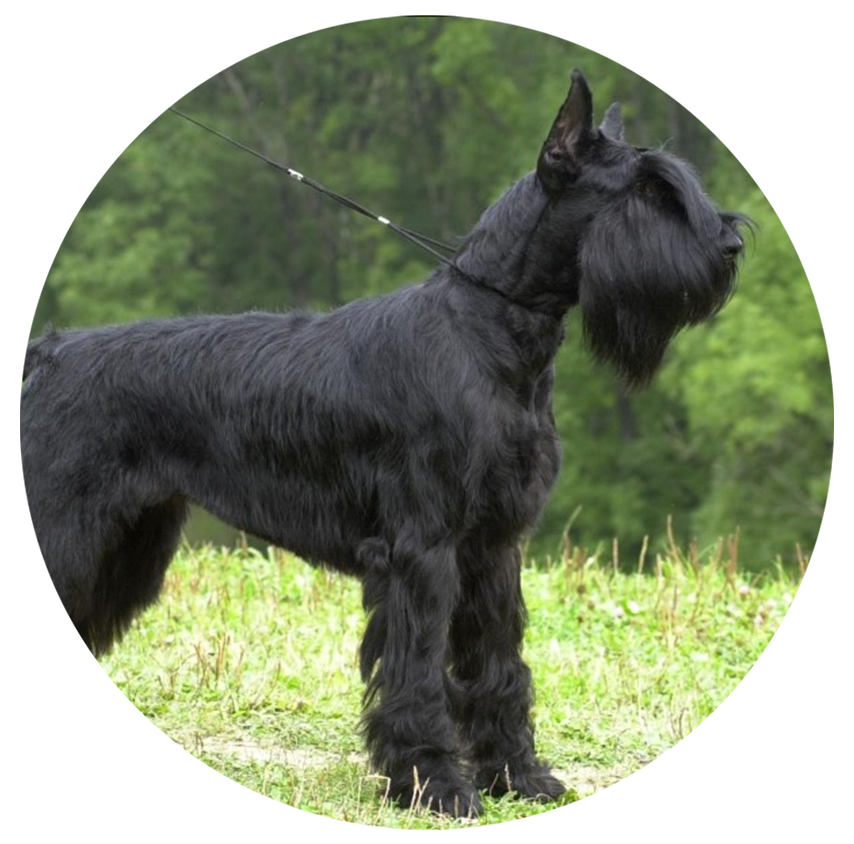

Ризеншнауцер
РИЗЕНШНАУЦЕР (нем. Riesenschnauzer, англ. Giant Schnauzer), порода служебных собак. Другое название - гигантский шнауцер. Ризеншнауцер - самая крупная разновидность шнауцеров (средний - миттельшнауцер, карликовый - цвергшнауцер). Порода, известная со средних веков, выведена в Германии. Жесткошерстные пастушьи собаки разных форм встречались по всей Европе. Считается, что предком современного ризеншнауцера является большой жесткошерстный пинчер, распространенный в районе Мюнхена. Также его называли русским, или медвежьим, шнауцером (происхождение от русских пород собак не подтверждается). Окончательно порода сформировалась при планомерном скрещивании с более мелкими разновидностями шнауцеров. Впервые порода была представлена на Мюнхенской выставке в 1909 году. В 1925 году была включена в группу служебных собак.
Собака крепкого сложения, почти квадратного формата. Высота в холке кобеля - 65-70 см, суки - 60-65 см. Голова прямоугольная, массивная. Переход от лба к морде умеренный. Морда мощная, тупая, мочка носа черного цвета. Уши высоко посажены (часто купируют). Шея сухая, мускулистая, высоко поставлена. Грудь мощная, овальной формы. Спина прямая. Поясница короткая. Круп немного опущен. Хвост высоко поставлен, купируют, оставляя до трех позвонков. Лапы короткие, круглые, компактные. Шерсть жесткая, проволокообразная. На морде сильно развитые усы, борода и косматые брови. Окрас: сплошной черный или "перец с солью". Ризеншнауцер используется для охраны и как служебная собака - смелая и надежная. Настороженно-недоверчивое отношение к посторонним у него в крови. Легко дрессируется, активен, послушен. Отличается игривым нравом и всегда поладит с детьми. Нуждается в серьезных физических нагрузках и длительных прогулках. Шерсть требует ухода: необходимо ежедневно чистить проволочной щеткой, расчесывать гребнем усы и брови, а 2 раза в год производить специальный тримминг.
Характер
Типичными чертами этой собаки являются ее превосходный уравновешенный темперамент и неповторимая преданность хозяину. Ризеншнауцер обладает очень хорошо развитыми органами чувств. Он благоразумен, прилежен, силен, настойчив, имеет очень хороший иммунитет и отлично адаптируется к новому климату. Его природная самоуверенность, уравновешенность и выносливость позволили ему стать превосходной спортивной, рабочей и служебной собакой, а также собакой-компаньоном.
Вес и рост взрослых
Высота в холке кобеля - 65-70 см, суки - 60-65 см.
Вес 35—47 кг.
Здоровье и возможные проблемы со здоровьем
Ризеншнауцеры более склонны к раку, чем большинство других пород. У них повышенный риск вздутия. Встречается эпилепсия и дисплазия тазобедренного сустава.
Условия содержания
Лучше всего будет содержать эту собаку в загородных условиях.
Тренировки
Ризеншнауцер — сильная и подвижная собака. Ей необходимы физические нагрузки, энергичные упражнения и игры, длительные прогулки. Отсутствие или недостаток активности могут грозить отклонениями поведения и избыточным весом.
Продолжительность жизни
12-15 лет.
Уход за шерстью
Во избежание «колтунов» специалисты советуют ежедневно расчесывать ризеншнауцеру морду. Также необходимо протирать морду ризеншнауцера после приема пищи.
Дважды в год ризеншнауцера необходимо тримминговать (выщипывать шерсть). Если собаку этой породы просто подстричь или побрить, шерсть потеряет жесткость и станет мягкой и пушистой. Шерсть вокруг глаз и ушей нужно остригать, чтобы она не доставляла собаке дискомфорт. Ухода требуют и лапы ризеншнауцера: регулярно подстригайте шерсть на подушечках лап и когти.